The Walker's Haute Route
Friday
I left the town, again with some pilfered bread and butter for lunch. I walked along a bisse. This is a really cool stream beside a trail made long ago so farmers could irrigate their fields. The water bubbles along right next to you, sometimes slightly raised above the trail giving a pleasant feeling of cultivated nature. Later I saw where little wooden gates in the water were used to divert a portion from the main stream to the bisse. Really neat!
I hiked up into a valley, the Val d’Arpette, with “entry level” peaks of the Mont Blanc Range on the left. In the forest I admired a granite boulder that reminded me of boulders on the Mountaineer’s Creek approach to Colchuck Lake in Washington State. It had been a year since I’d seen such granite, and I missed it. Rocky peaks of Clochers d’Arpette loomed on the right, looking very much like the Condor Buttress area of Icicle Creek (again in Washington State). It was a real nostalgia walk.
I saw a few people as the terrain steepened, but then after crossing a boulderfield near the head of the valley, I came on a crowd of 40 people. For the first time, I was seeing the crowds I’d heard of. I didn’t mind at all though, that is until they became dangerous!
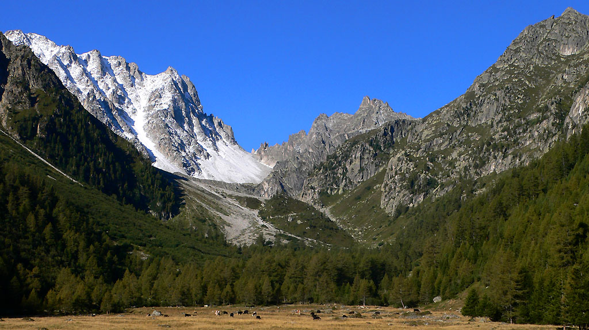
The Val d'Arpette, and forepeaks of the Mont Blanc Range.
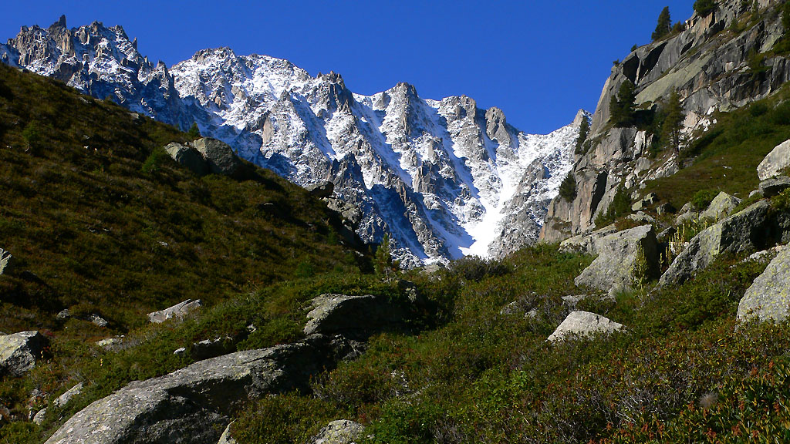
Heather, granite and snow in the Val d'Arpette.
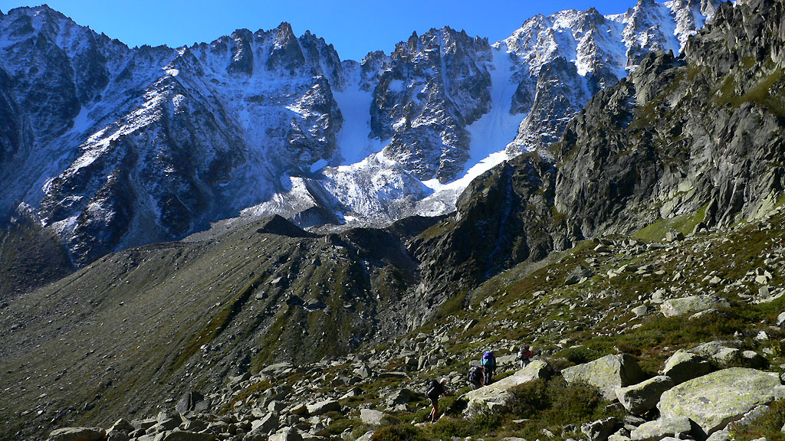
Hiking up to the Fenetre d'Arpette (pass).
As we all headed up to the pass, I continually passed people on little side trails. I thought maybe I was being a little rude, but then when the rocks started falling I felt justified. Somehow, various people on the trail were adept at prying large rocks loose and sending them down on their companions with cries of “doitors!” I didn’t know what the word meant, but it was more dangerous than many mountain climbs. Even children were leaping and dodging the boulders knocked loose. Once the rock fell, everyone would settle back to climbing. Only to be alarmed moments later when someone knocked another rock loose! By now I was well to the side, practically rock climbing to avoid the circus. I guess you really learn how to walk on such terrain, I couldn’t remember having such trouble.
At the pass I loved the view, and needed to get clear of the crowds for a while. I scrambled up a granite summit to the south. I made a few 4th and 5th class moves to reach the summit. I felt my balance restoring looking up at the massive Aiguille du Tour and the icefall spilling down from the Plateau du Trient. This place was a wonderland. Back among the crowd at the pass, I said “howdy” to a man who giggled inanely in response. He was probably seeing his worst nightmare of a cliched American come to life. Whatever. Or maybe he was on drugs. Somehow I’d gotten accustomed to wending my quiet way alone, without people. And now they seemed strange to me.
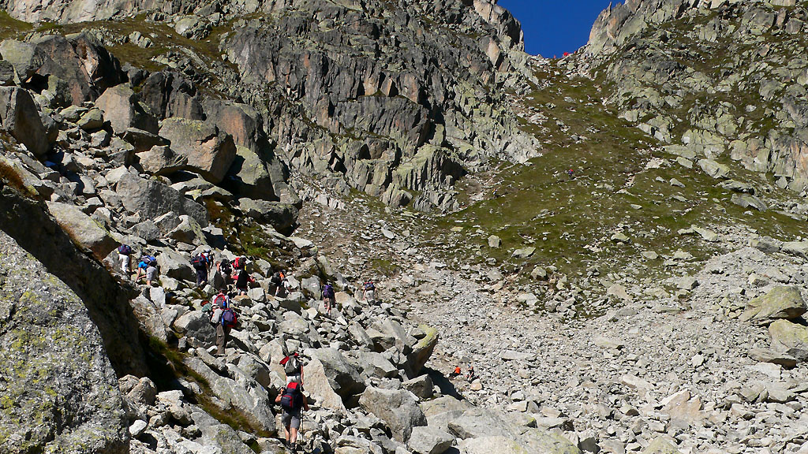
Suddenly, a crowd hiking up to the Fenetre d'Arpette.
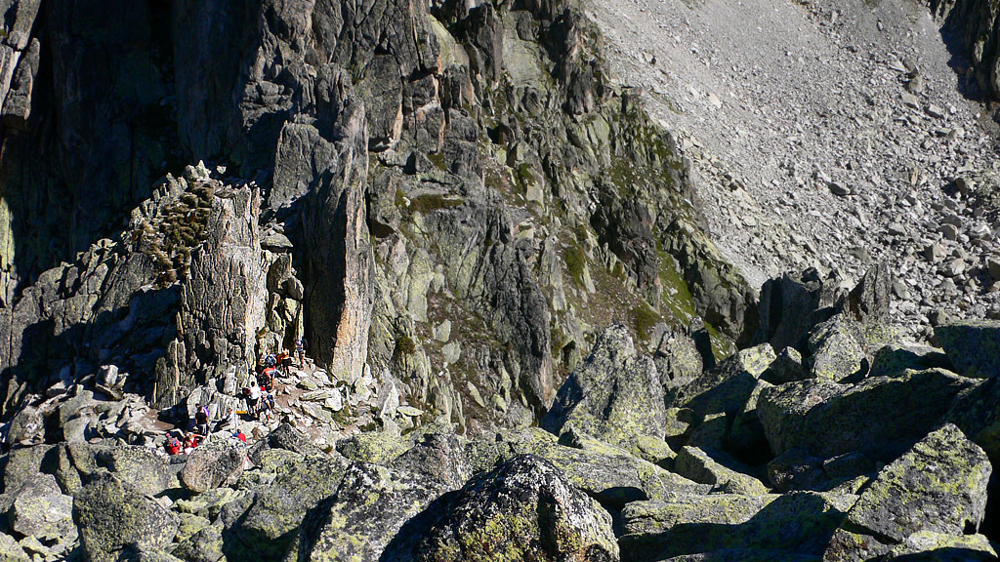
Looking down on the pass from beautiful granite blocks.
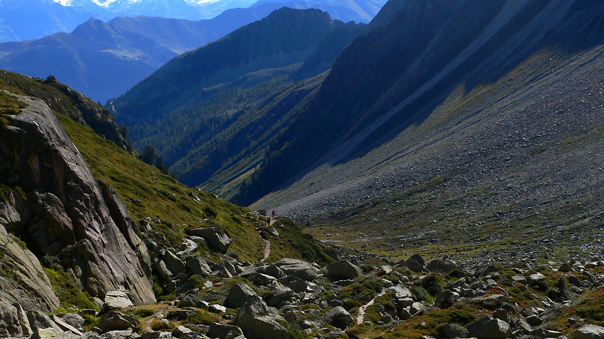
Looking east down the Val d'Arpette.
I passed everyone on the way down the valley, admiring the opposite valley wall where I’d spend the afternoon hiking. I bought a sandwich at a restaurant down in the valley, then started hiking slowly up the opposide side of the creek. It was very hot. I reached a little hut at a place called Les Grands, then contoured away from a spectacular glacier view (Glacier des Grands) for a nice walk with a view town to the town of Trient. Continuing, I entered the valley of Nant Noir, and saw the French border above me at Col de Balme, marked by a large house where I planned to sleep.
More walking brought me there, pretty tired after a long day of hiking. I was saddened to see the hut didn’t have potable water, as I was out and should have filled up at a stream before. The warden showed me to my room, which was freezing cold! After going outside to warm up and admire the crazy view of Mont Blanc, I was back in the room wearing thick gloves and trying to re-warm my hands. I called Kris on the phone to say I’d be in Chamonix tomorrow. But life at home was not going well!
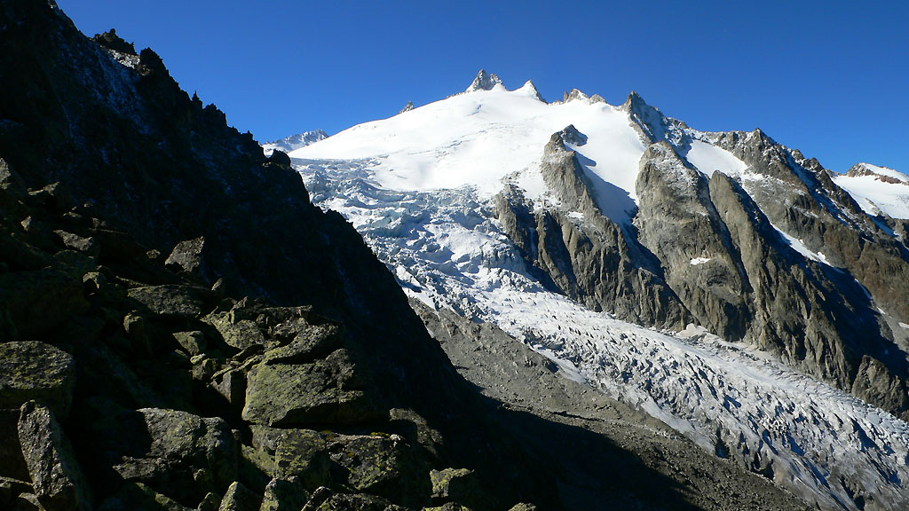
The Glacier du Trient from the Fenetre d'Arpette. The high peak might be Fourche.
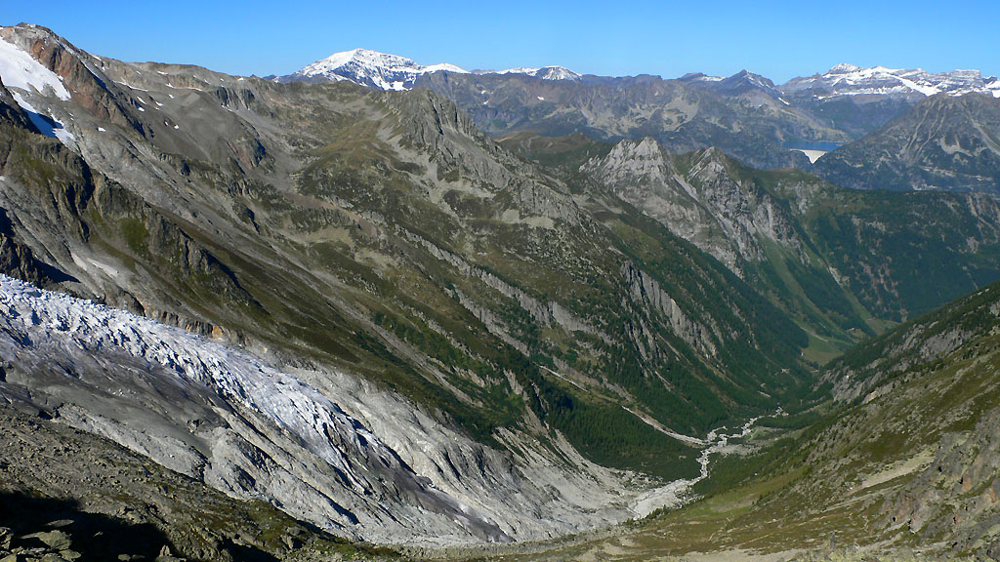
Looking west from the pass, with the Glacier du Trent on the left.
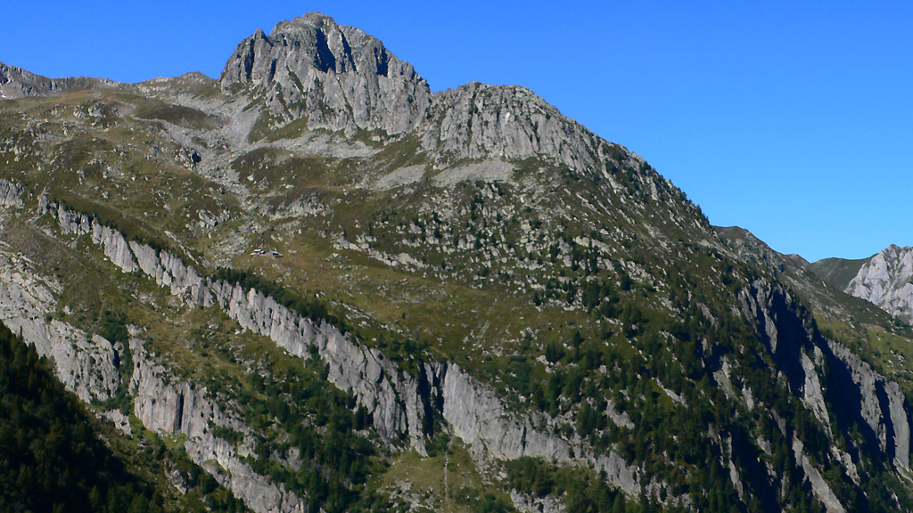
Many switchbacks lead to the (unnamed?) hut on the center-left, an area named Les Grands.
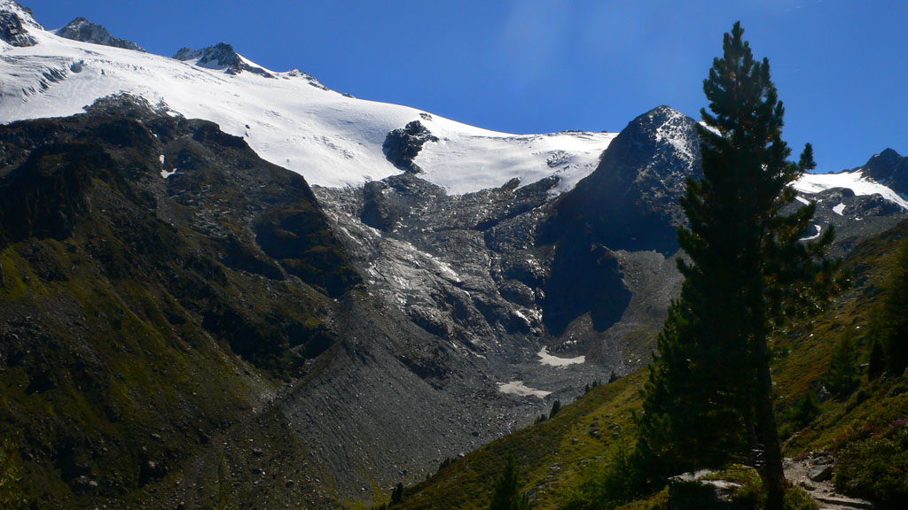
The Glacier des Grands from the interesting hike to Les Grands.
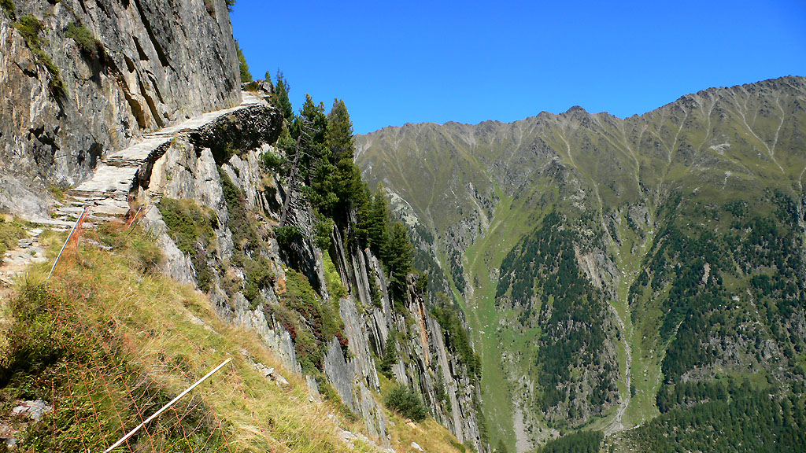
A strange and creepy trail to Les Grands.
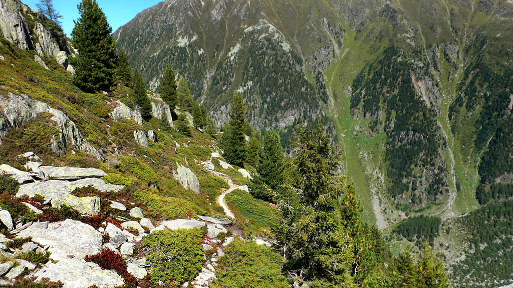
A beautiful subalpine trail, contouring west from Les Grands.
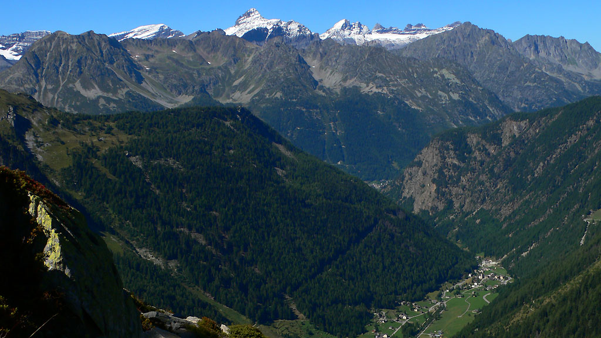
Trient lies in the valley below, with the snowy peaks of Mont Ruan and Tour Salliere in the distance.
We had to move out of our place for two weeks while ceilings were repaired. Kris got a look at the apartment we’d move to, and it was terrible. Completely unsafe for the kids, and too small. Actually, we wanted 2 rooms, one for us and one for the kids. What we got was a one room apartment on the first floor, and another one room apartment on the fourth floor. This in a kind of run-down building near the university that didn’t inspire confidence. What kind of logic is that? We can’t leave 18 month old babies in a room of their own 3 floors away! Kris was pretty upset.
That’s it. I’m coming home. I was mad about the apartment situation, and not pleased with the hut either - expensive but cold, cheerless, and just as expensive as a hotel in the valley with hot water and heat. I quickly packed up and left.
My right knee and left heel were really sore, but I hobbled down through ski lifts. It wasn’t the ending I expected. I just really wanted to be home now, as I was needed. The kids would babble on the phone and cry when I had to hang up. Rowan asked his mom for me by holding a pretend phone to his head and making the sign language for “daddy.” Aww!
Down in Le Tour I started hitchhiking and right away a really nice woman stopped for me. She was driving a shuttle van, but gave me a free ride anyway. She was kind of a full-time snowboarder. Suddenly I was in downtown Chamonix. After 30 minutes I found a place to stay (the Richmond, I think). It had good rooms, a hot shower and was cheap. I ate dinner at a chinese food restaurant and watched the sun leave the slopes of Mont Blanc.
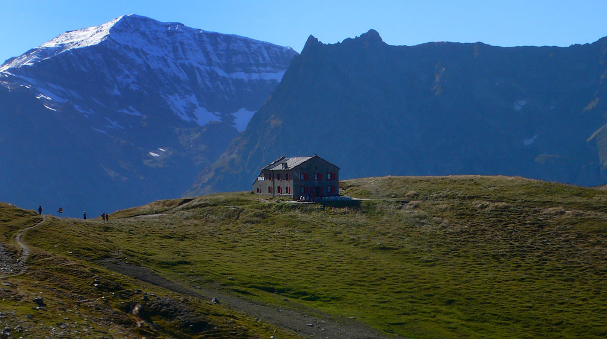
The Cabane at the Col du Balme, on the Swiss-French border.
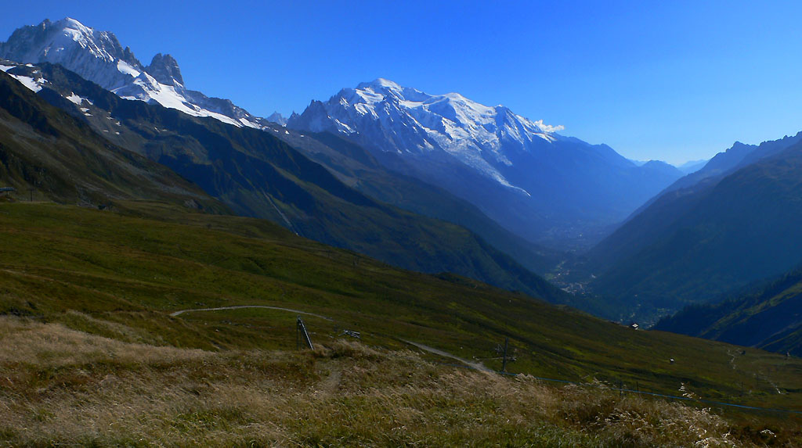
First views of Mont Blanc from Col du Balme.
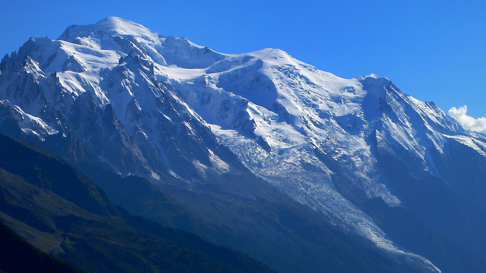
Closeup of Mont Blanc.
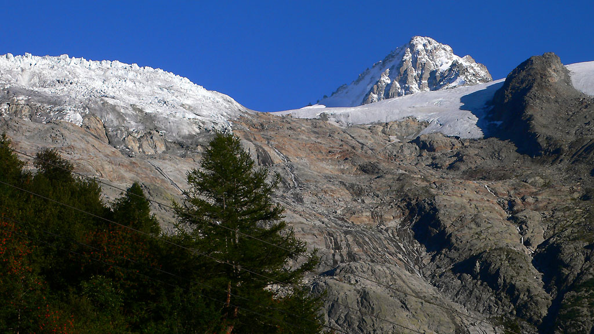
The chaotic icefall of the Glacier du Tour, with aiguilles behind.
Saturday
I didn’t have much to do, though the fine morning convinced me to take a lift up to the summit of Le Brevent. I envied some english guys with climbing gear going to climb a multi-pitch route on the peak. I felt out of rythym, and sad to not be getting up and hiking due west another day. Clouds came in quickly, and I left my perch on a little summit when the rain started. Back in town I read and waited for my train to Zermatt. I needed to take a leak at the train station but they didn’t have a bathroom. What’s up with that? I found “a way,” though the station authorities wouldn’t be happy with me. You know, I don’t understand all the “Welcome to Chamonix!” signs when there is no public restroom in a trainstation, where people of all ages have to wait.
Chamonix wasn’t “as bad” as I thought it would be from the point of view of crowds or stuck-up alpinists or some such thing I’d read about somewhere. Though my heart wasn’t in being there, so I can’t say too much about it.
The trains took about 4 hours, then I got my car and retrieved my hidden gear (yes!) near St. Niklaus. I started the drive home at 7 pm, and was home at 1 am. Whew!
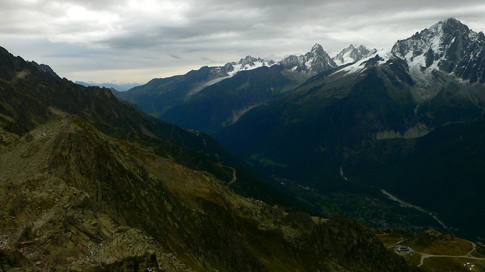
Above Chamonix, looking back east to the Col du Balme.
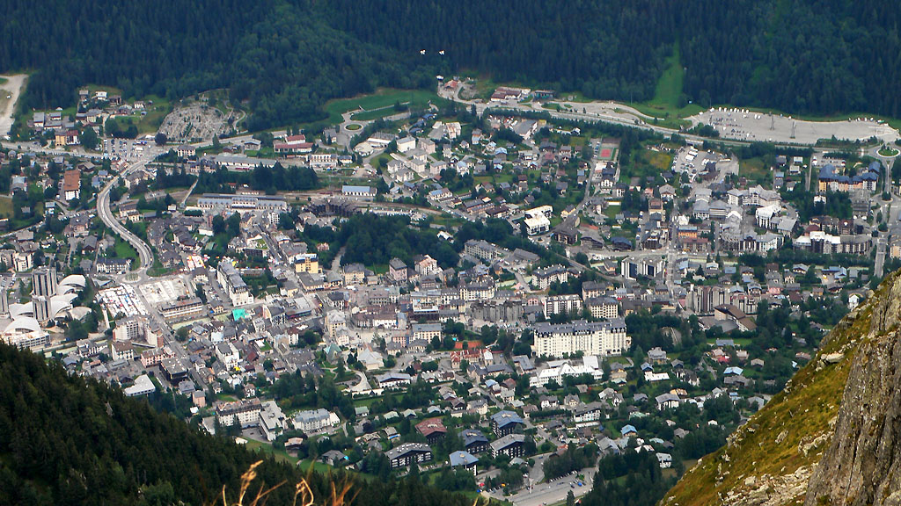
Looking down on Chamonix from Le Brevent.
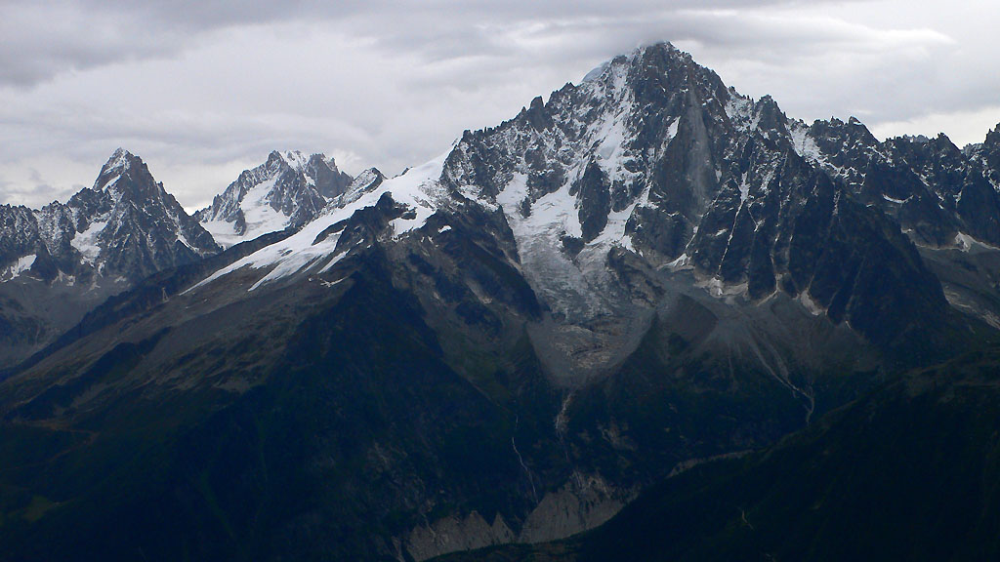
The Dru on a rainy morning.
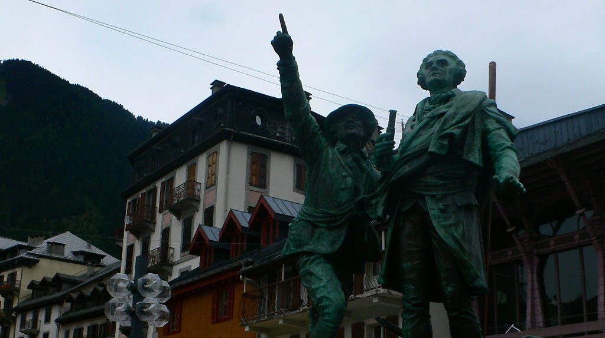
The statue depicts the first climber of Mont Blanc.
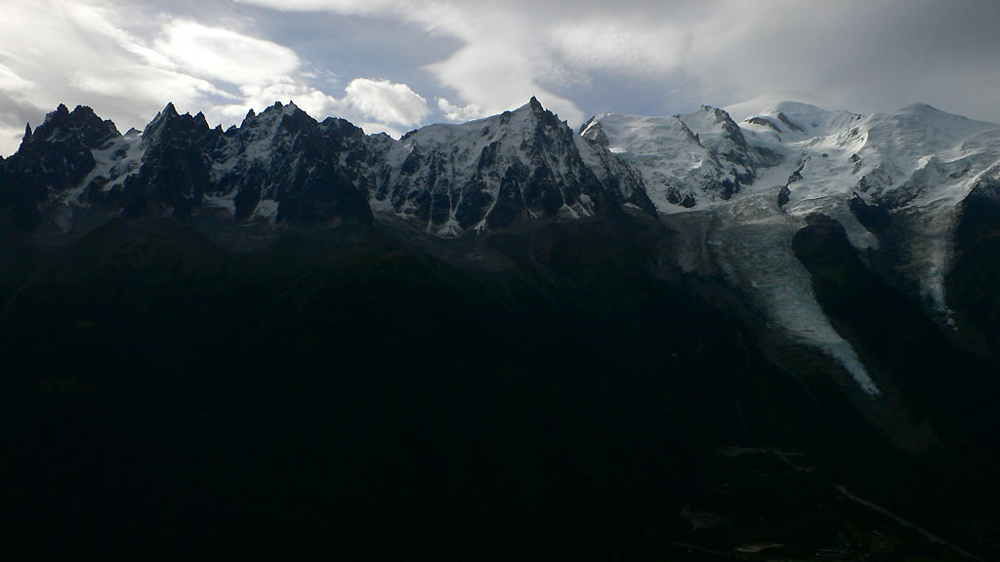
A brooding array of sharp peaks seen from Le Brevent. Chamonix is directly below.